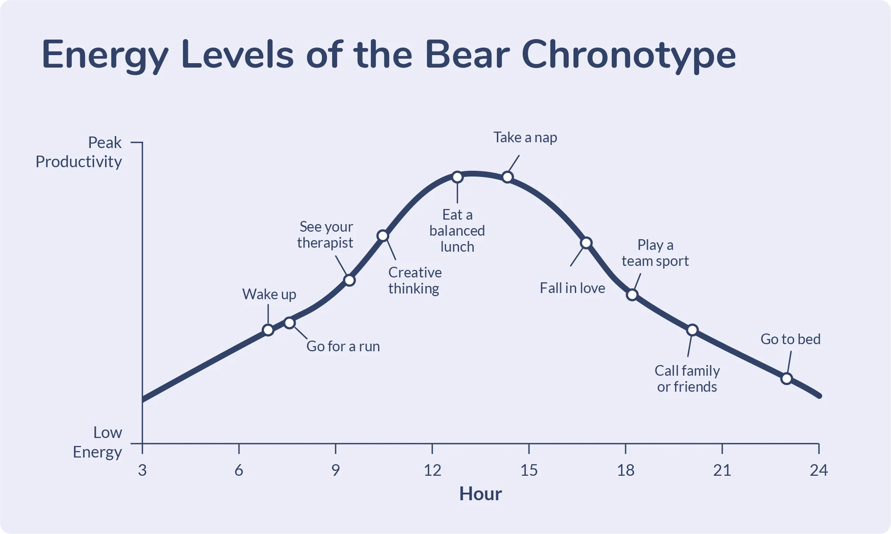

Bears are suited to the 9-5 schedule. You probably don't need to change your schedule much, but optimizing it can give you an edge over other bears in productivity and health! As a bear, you might feel a little bit tired during the late afternoon, maybe around 3pm. Rest around that time can help you work better during the evening. You don't need to take an hour out of your day just to nap. Even 10 minutes of closing your eyes can be enough.
